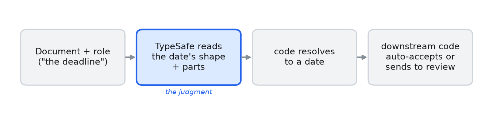

日期抽取
通过向 TypeSafe 询问文档中提到的日期各部分来抽取绝对日期与相对日期，然后在代码中解析并校验它们，并基于置信度决定是否送人工审核。
用 TypeSafe 从文本中读出日期的各个部分，再在代码中把它们解析成一个 date。
你在这里构建的函数 extract_date(document, role) 接收一个文档和一个指明所需日期的 短语（例如"交回表格的截止日期"），返回一个带置信度的 date。它会标记低置信度的 读取，以及各部分根本拼不成一个日期的读取——包括文档从未提到过的日期。日期可以是 明写的（"2027 年 8 月 14 日"），也可以是相对今天写的（"明天"、"下周四"）。
TypeSafe 在一次调用中回答关于该日期的 Choice 问题：它是哪种日期，以及文本提到了 哪个月、哪一天、哪一年或星期几。代码把这些答案转换成一个 date。模型只读文本说了 什么，从不做日历计算。
下面的单元格在四份短文档上运行该函数，打印每个日期及其置信度，并把结果分成代码 接受的部分和应当由人查看的部分。

TypeSafe 读取日期的书写方式以及文本提到了哪些部分。代码把这些答案转换成一个 date，当日期是相对形式时从今天起算，然后要么接受它，要么送去审核。
环境准备
pip install ipython 'cooksafe>=0.2.0,<0.3.0'然后设置 TYPESAFE_API_KEY。
import os
from datetime import date, timedelta
from pathlib import Path
from cooksafe import JsonCache, make_playground_link
from IPython.display import Markdown, display
from typesafe_sdk import Choice, TypeSafeClient
TYPESAFE_MODEL = "jev-1.12"
TODAY = date(
2026, 7, 30
) # fixed reference "today" so relative dates resolve reproducibly
REVIEW_BELOW = 0.60 # gate: a date below this confidence is flagged for a human
MONTHS = {
"January": 1,
"February": 2,
"March": 3,
"April": 4,
"May": 5,
"June": 6,
"July": 7,
"August": 8,
"September": 9,
"October": 10,
"November": 11,
"December": 12,
}
WEEKDAYS = [
"Monday",
"Tuesday",
"Wednesday",
"Thursday",
"Friday",
"Saturday",
"Sunday",
]
YEAR_WINDOW = list(range(1900, 2051)) # 1900..2050
# Cached to json_cache.json (shipped with the cookbook, so re-rendering replays the published
# results with no API spend); delete it to re-run live.
json_cache = JsonCache(Path("json_cache.json"))# The demo cells below run when this file is executed as the cookbook; the constants and the pure
# resolve/assemble code stay importable, so the calendar math can be unit-tested on its own.
if __name__ == "__cookbook__":
client = TypeSafeClient(
api_key=os.environ.get(
"TYPESAFE_API_KEY", "cache-only"
), # cached re-renders need no key
base_url=os.environ.get("TYPESAFE_BASE_URL"),
timeout=30.0,
)这些问题
七个 Choice 问题在一次调用中发出。mode 说明日期是怎么写的：absolute 表示一个 提到月份的日期，relative 表示相对今天写的日期，none 表示文档完全没有陈述该日期。
另外六个问题读取各个部分。绝对日期需要 month、day 和 year。相对日期需要 day_anchor：今天、明天、后天，或某个具名的星期几。当它提到星期几时，weekday 和 week_offset 说明是哪一天、哪一周。代码只读取 mode 所要求的部分。
year 为 1900 到 2050 的每个年份列出一个选项，外加两个逃生口。none 表示文本没有 给出年份，由代码补上一个。out_of_range 表示文本给出的年份不在列表之内，代码会 标记这一点而不是去猜。如果这么长的列表让你介意，可以先从文本里抽出像年份的数字， 只把那些提供给模型。
def date_questions(role: str) -> dict[str, Choice]:
"""Seven typed choices that read a date's shape and parts off the text -- no math."""
absent = "The document does not state this, or it is not this kind of date."
return {
"mode": Choice(
instructions=(
f"How is {role} written? 'absolute' = a calendar date naming a month (e.g. "
"'August 14', 'the 3rd of March'); 'relative' = given relative to today (today, "
"tomorrow, the day after tomorrow, or a named weekday such as 'next Thursday'); "
"'none' = the document does not state this date."
),
criteria={"absolute": None, "relative": None, "none": None},
),
"month": Choice(
instructions=f"If {role} is an absolute calendar date, which month is it in?",
criteria={m: None for m in MONTHS} | {"none": absent},
),
"day": Choice(
instructions=f"If {role} is an absolute calendar date, which day of the month (1-31)?",
criteria={str(d): None for d in range(1, 32)} | {"none": absent},
),
"year": Choice(
instructions=(
f"If {role} is an absolute calendar date, which year? Pick 'none' if the document "
"states no year (code infers it), or 'out_of_range' if a year is stated but not "
"in the list."
),
criteria={str(y): None for y in YEAR_WINDOW}
| {
"out_of_range": "A year is stated for this date but is outside the listed range.",
"none": "No year is stated for this date.",
},
),
"day_anchor": Choice(
instructions=(
f"If {role} is relative to today, which day is it? 'today', 'tomorrow', "
"'day_after' (the day after tomorrow), or 'weekday' (a named day of the week)."
),
criteria={
"today": None,
"tomorrow": None,
"day_after": None,
"weekday": None,
"none": absent,
},
),
"weekday": Choice(
instructions=f"If {role} names a day of the week, which one?",
criteria={w: None for w in WEEKDAYS} | {"none": absent},
),
"week_offset": Choice(
instructions=(
f"If {role} names a weekday, which week is it in? 'next' for 'next Thursday' or "
"'Thursday next week'; 'current' for 'this Thursday'; 'none' for a bare weekday "
"with no qualifier (just 'Thursday' / 'on Thursday')."
),
criteria={"current": None, "next": None, "none": absent},
),
}在代码中解析
read_parts 发起调用。assemble 把答案变成一个 date：当文本没有给出年份时它会 补上年份，并算出具名的星期几指向哪一天。这两者都从 TODAY 起算；TODAY 是固定的， 因此相对日期在每次运行中的结果都相同。assemble 还会报告它所用各部分中最低的 置信度，因此任何一部分上的弱答案都可能把整个日期送去审核。
"next Thursday"可以指两个不同的日子，因此由代码决定是哪一个。不带修饰语的星期几 表示今天或之后最近的那个。next 表示下一个日历周，current 表示本周。
@json_cache
def read_parts(document: str, role: str) -> dict:
"""One TypeSafe call -> {part: {choice, confidence}} for the seven questions."""
answers = client.system_one(
state=document, questions=date_questions(role), model=TYPESAFE_MODEL
).answers
return {
part: {"choice": ans.choice, "confidence": ans.confidence}
for part, ans in answers.items()
}
def resolve_weekday(today: date, weekday: str, week_offset: str) -> date:
"""Which date a named weekday points to, by our stated convention: a bare weekday is the next
occurrence on or after today; 'next' is the following calendar week; 'current' is this week."""
w = WEEKDAYS.index(weekday)
this_monday = today - timedelta(days=today.weekday())
if week_offset == "next":
return this_monday + timedelta(days=7 + w)
if week_offset == "current":
return this_monday + timedelta(days=w)
return today + timedelta(days=(w - today.weekday()) % 7)
def assemble(parts: dict, today: date = TODAY) -> dict:
"""Resolve the parts TypeSafe read into a concrete date, in code. Confidence is the weakest of
the parts the shape actually used."""
mode = parts["mode"]["choice"]
confs = [parts["mode"]["confidence"]]
def result(resolved: date | None, note: str) -> dict:
usable = [c for c in confs if c is not None]
confidence = min(usable) if usable else None
needs_review = (
resolved is None or confidence is None or confidence < REVIEW_BELOW
)
return {
"date": resolved,
"confidence": confidence,
"needs_review": needs_review,
"note": note,
}
if mode == "none":
return result(None, "no such date stated")
if mode == "absolute":
month, day, year = (
parts["month"]["choice"],
parts["day"]["choice"],
parts["year"]["choice"],
)
confs += [
parts["month"]["confidence"],
parts["day"]["confidence"],
parts["year"]["confidence"],
]
if "none" in (month, day) or not day.isdigit() or month not in MONTHS:
return result(None, "absolute date incomplete")
if (
year == "out_of_range"
): # a year is stated but off the list -> flag, don't guess
return result(None, f"year outside {YEAR_WINDOW[0]}-{YEAR_WINDOW[-1]}")
if (
year == "none"
): # no year stated -> infer this year, bumped to next if well past
try:
resolved = date(today.year, MONTHS[month], int(day))
except (
ValueError
): # e.g. February 30 -- an inconsistent read, not a real date
return result(None, f"impossible date: {month} {day}")
if resolved < today - timedelta(days=31):
resolved = date(today.year + 1, MONTHS[month], int(day))
return result(resolved, "")
try: # a stated, in-range year
return result(date(int(year), MONTHS[month], int(day)), "")
except ValueError:
return result(None, f"impossible date: {year}-{month}-{day}")
if mode == "relative":
anchor = parts["day_anchor"]["choice"]
confs.append(parts["day_anchor"]["confidence"])
if anchor == "today":
return result(today, "")
if anchor == "tomorrow":
return result(today + timedelta(days=1), "")
if anchor == "day_after":
return result(today + timedelta(days=2), "")
if anchor == "weekday":
weekday, offset = parts["weekday"]["choice"], parts["week_offset"]["choice"]
confs += [
parts["weekday"]["confidence"],
parts["week_offset"]["confidence"],
]
if weekday not in WEEKDAYS:
return result(None, "relative weekday not read")
return result(resolve_weekday(today, weekday, offset), "")
return result(None, "relative day not read")
return result(None, f"unrecognized mode: {mode}")
def extract_date(document: str, role: str) -> dict:
return assemble(read_parts(document, role))运行它
四个短文档上的六个问题：一份写明年份的合同中的两个日期、一个没写年份的表格截止 日期、一个于"今天"截止的调查、一个安排在"下周四"的评审，以及一个表格从未提到的 日期。所有这些都按 TODAY = 2026-07-30（星期四）来解析。
CONTRACT = "This agreement is effective January 1, 2025 and expires December 31, 2027."
FORM = "Please return the signed form by August 14."
SURVEY = "Heads up - the customer survey closes today at 5pm."
REVIEW = "Let's schedule the design review for next Thursday."
# (document, question phrase, expected date) -- the expected value is only for the scorecard.
EXAMPLES = [
(CONTRACT, "the date the agreement takes effect", date(2025, 1, 1)),
(CONTRACT, "the date the agreement expires", date(2027, 12, 31)),
(FORM, "the deadline to return the form", date(2026, 8, 14)),
(FORM, "the date of the kickoff call", None),
(SURVEY, "the date the survey closes", date(2026, 7, 30)),
(REVIEW, "the date of the design review", date(2026, 8, 6)),
]
if __name__ == "__cookbook__":
print(f"{'':3}{'question':<38}{'expected':<12}{'got':<12}{'conf':>6} flags")
print("-" * 84)
for document, role, expected in EXAMPLES:
r = extract_date(document, role)
got = r["date"].isoformat() if r["date"] else "none"
exp = expected.isoformat() if expected else "none"
mark = "OK" if r["date"] == expected else "XX"
conf = f"{r['confidence']:.2f}" if r["confidence"] is not None else " n/a"
flags = " <== review" if r["needs_review"] else ""
if r["note"]:
flags += f" ({r['note']})"
print(f"{mark:<3}{role:<38}{exp:<12}{got:<12}{conf:>6}{flags}") question expected got conf flags
------------------------------------------------------------------------------------
OK the date the agreement takes effect 2025-01-01 2025-01-01 0.97
OK the date the agreement expires 2027-12-31 2027-12-31 0.91
OK the deadline to return the form 2026-08-14 2026-08-14 0.95
OK the date of the kickoff call none none 0.46 <== review (absolute date incomplete)
OK the date the survey closes 2026-07-30 2026-07-30 0.94
OK the date of the design review 2026-08-06 2026-08-06 0.92合同写明了它的两个年份，因此它们直接来自文本。表格没写年份，所以代码补上了 2026： 它取当前年份，只有当该日期已经过去一个多月时才移到下一年。"今天"和"下周四"与 明写的日期走的是同一个函数。
启动会议（kickoff call）就是表格从未提到的那一个。表格里确实有日期，只是没有这一 个；备注 absolute date incomplete 表示 mode 返回了 absolute 却没有与之相配的 月份。日期返回为空，置信度为 0.46，该行被标记为需要人工查看。
用于路由的置信度
每个答案都带着校准后的置信度返回，而一个日期的置信度是构成它的各部分中最低的那 个。低于 REVIEW_BELOW = 0.60 的日期交给人工，代码完全拼不出来的日期也一样。其余 的直接通过。
if __name__ == "__cookbook__":
confident = [
(doc, role)
for doc, role, _ in EXAMPLES
if not extract_date(doc, role)["needs_review"]
]
review = [
(doc, role)
for doc, role, _ in EXAMPLES
if extract_date(doc, role)["needs_review"]
]
print(f"auto-accept ({len(confident)}):")
for _doc, role in confident:
print(f" - {role}")
print(f"\nsend to review ({len(review)}):")
for _doc, role in review:
r = extract_date(_doc, role)
print(
f" - {role} (conf {r['confidence']:.2f} / {r['note'] or 'low confidence'})"
)auto-accept (5):
- the date the agreement takes effect
- the date the agreement expires
- the deadline to return the form
- the date the survey closes
- the date of the design review
send to review (1):
- the date of the kickoff call (conf 0.46 / absolute date incomplete)在 TypeSafe Playground 中打开它
下面的链接带有"next Thursday"这条消息，以及代码发送的同样问题。打开它即可查看 答案及其置信度，并在不写任何代码的情况下修改措辞。
if __name__ == "__cookbook__":
playground_link = make_playground_link(
REVIEW, date_questions("the date of the design review"), models=[TYPESAFE_MODEL]
)
display(
Markdown(
f"🔗 [Open this document + questions in the TypeSafe playground]({playground_link})"
)
)